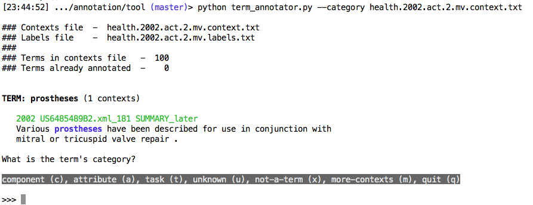

The term annotator is a simple command line tool to take a file with terms and contexts, display the term in context and sollicit a label for the term. It is invoked as follows:
$ python term_annotator.py --technology <SOURCE_FILE> $ python term_annotator.py --category <SOURCE_FILE> $ python term_annotator.py --polarity <SOURCE_FILE>
The tool has three modes: technology annotation (labels: yes, no, not-a-term), category annotation (labels: attribute, task, component, other, not-a-term) and polarity annotation (labels: yes, no, unknown, not-an-attribute).
The SOURCE_FILE has to end in .context.txt. The first time you open SOURCE_FILE, a new file will be created with the same name, except that it will end in .labels.txt. This file contains the results of the annotation, that is, the labels for the terms that were annotated. Initially this labels file is empty except for a header copied from SOURCE_FILE. The label file will be opened on subsequent visits to the file. SOURCE_FILE is only read and never written to.
The image below shows what you'll see when you start category annotation on a file.
Upon starting, the tool shows what files it is dealing with, how many terms there are in the file and how many terms were already annotated. It then displays one term with a maximum of five of its contexts where for each context we have a year, a file name, the position in the document of the context (these three all in green) and the actual sentence. Below the contexts is a line with a query and then some options. In category mode, as in the example above, the first five options are the available labels for the term: component (c), attribute (a), task (c), unknown (u) and not-a-term (x). If the annotator now enters a "t" followed by a return, the tool will save the task label for the term by appending a line to the .labels.txt file and then present the next term. Here are some annotation guidelines for categories:
c a component/entity that could be a part of an invention or something produced or acted upon by an invention (device, piece of a device, body part, user, chemical...) a a measurable attribute (dimension, scale, which may have different levels or degrees, such as a disease, a resource, a state that can change from more to less) t a task, something that can be performed, done, accomplished) o some other type that doesn't fit under the a,c,t labels x a poorly formed term (chunker error, e.g. noun-phrase missing an important component or not really a noun phrase)
For all modes, hitting 'm' followed by a return directs the tool to show all available contexts. Hitting 'q' followed by return terminates annotation and closes the files. When a file is reopened, the tool remembers where it stopped last time and will not simply start at the beginning when a file is reopened.
This tool only allows you to add labels to terms that were not annotated before, it does not allow the user to revisit annotations (this would have to be done maually by opening the labels file, or better, to avoid potential trouble, by making a note in a separate file).